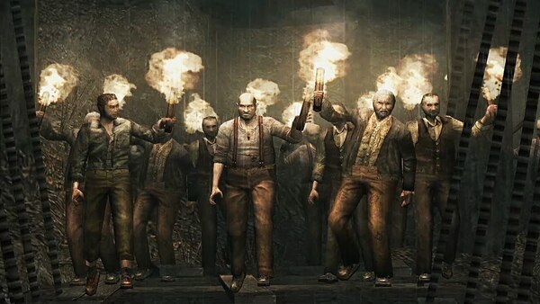

Ganados
São os primeiros inimigos do jogo, inicialmente camponeses psicopatas, mas passando o jogo você descobre que eles são pessoas comuns, com o cérebro controlado pela Praga. Eles tem diferentes variações, desde ferramentes agrícolas, até Serra elétrica e bombas, com alguns podendo se transformar em um forma evoluída do vírus, com a vabeã soltando tentáculos com garras logo após tomar um Head-Shot.
dificuldade: Relativamente fáceis, tem vida e ataque baixo. eles tem padrões de ataques diferentes, e uma boa variedade de armas, mas depois de 1 hora de gameplay você se acostima. Esse jogo segue um sistema de ir ficando mais difícil conforme a história avança, então o poder deles fica maior se você não fizer bons updates.